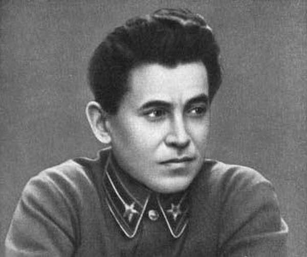

Протокол допроса Ежова
21 сентября, 10:15

Интересный протокол допроса бывшего наркома НКВД Ежова, который более чем наглядно иллюстрирует причины, по которым была расстреляна практически вся верхушка НКВД проводившая репрессии 1937 года. Помимо этого, можно обратить внимание, что Ежов в своих показаниях достаточно наглядно показывают, откуда взялись "десятки тысяч польских шпионов", почему не производился должный прокурорский надзор и к чему приводит утеря контроля над проведением репрессий со стороны государства.
Из протокола допроса обвиняемого Ежова Николая Ивановича от 4 августа 1939 года
От «4» августа 1939 года Ежов Н. И., 1895 года рождения, бывш. член ВКП(б) с 1917 года. До ареста — Народный Комиссар Водного Транспорта Союза ССР.
Вопрос: Следствию известно, что проведенные органами НКВД СССР в 1937-1938 гг. массовые операции по репрессированию бывших кулаков, к-р. духовенства, уголовников и перебежчиков различных сопредельных с СССР стран вы использовали в интересах антисоветского заговора. Насколько это соответствует истине?
Ответ: Да, это целиком соответствует действительности.
Вопрос: Добились ли вы осуществления своих провокационных заговорщических целей при проведении массовой операции?
Ответ: Первые результаты массовой операции для нас, заговорщиков, были совершенно неожиданны. Они не только не создали недовольства карательной политикой советской власти среди населения, а наоборот вызвали большой политический подъем, в особенности в деревне. Наблюдались массовые случаи, когда сами колхозники приходили в УНКВД и райотделения УНКВД с требованием ареста того или иного беглого кулака, белогвардейца, торговца и проч.
В городах резко сократилось воровство, поножовщина и хулиганство, от которых особенно страдали рабочие районы.
Было совершенно очевидно, что ЦК ВКП(б) правильно и своевременно решил провести это мероприятие. Несмотря на принятые нами провокационные меры проведения массовой операции она встретила дружное одобрение трудящихся.
Вопрос: Заставило ли это вас отказаться от своих злодейских намерений?
Ответ: Я этого сказать не хочу. Наоборот, мы — заговорщики использовали это обстоятельство для того, чтобы всячески расширить массовые операции и усилив провокационные методы их проведения в конечном итоге добиться осуществления наших предательских заговорщических замыслов.
Вопрос: Каким образом вам удалось использовать сочувствие трудящихся к репрессиям против кулаков, к.-р. духовенства и уголовников, для того, чтобы добиться поставленных заговорщической организацией целей?
Ответ: Когда были исчерпаны в областях установленные для них, так называемые «лимиты» по репрессии бывших кулаков, белогвардейцев, к.-р. духовенства и уголовников, мы — заговорщики и я, в частности вновь поставили перед правительством вопрос о том, чтобы продлить массовые операции и увеличить количество репрессируемых. В доказательство целесообразности продолжения массовых операций мы приводили крайнюю засоренность этого рода элементами колхозов в деревне, фабрик и заводов в городах, подчеркивая заинтересованность и сочувствие к этой мере трудящихся города и деревни.
Вопрос: Удалось ли вам добиться решения правительства о продлении массовых операций?
Ответ: Да. Решения правительства о продлении массовой операции и увеличении количества репрессируемых мы добились.
Вопрос: Вы что же, обманули правительство?
Ответ: Продолжить массовую операцию и увеличить контингент репрессируемых безусловно было необходимо. Меру эту, однако, надо было растянуть в сроках и наладить действительный и правильный учет с тем, чтобы подготовившись, нанести удар именно по организующей, наиболее опасной верхушке контрреволюционных элементов. Правительство, понятно, не имело представления о наших заговорщических планах и в данном случае исходило только из необходимости продолжить операцию, не входя в существо ее проведения. В этом смысле мы, правительство, конечно, обманывали самым наглым образом.
Вопрос: Были ли сигналы со стороны местных работников НКВД и населения о существующих извращениях при проведении массовой операции?
Ответ: Сигналов об извращениях со стороны рядовых работников местных УНКВД было очень много. Еще больше такого рода сигналов было от населения. Однако, эти сигналы глушились как в УНКВД, так и в Центральном аппарате, аппарате Наркомвнудела, а сигнализирующих работников НКВД часто за это арестовывали.
Вопрос: Каким образом вам удавалось глушить сигналы местных работников и населения об извращениях?
Ответ: Сигналы нам удавалось глушить относительно легко, имея в виду, что все руководство было сосредоточено в руках заговорщиков. В центре все дело массовыми операциями было сосредоточено целиком в руках заговорщиков. Многие Управления НКВД также возглавлялись заговорщиками, которые были целиком в курсе наших заговорщических планов. Из центра по этим вопросам шло такое «конкретное» руководство, что всех начальников УНКВД мы толкали на расширение массовых репрессий и провокационное их проведение. В конце концов они привыкли к тому, что массовые операции являются наиболее легкой формой оперативной работы тем более, что проводились эти операции фактически бесконтрольно, во внесудебном порядке.
Вопрос: После того, как вам удалось продлить массовые операции, достигли ли вы поставленных заговорщической организацией целей вызвать недовольство карательной политикой советской власти среди населения?
Ответ: Да, растянув массовые операции на многие месяцы, мы в конечном итоге добились того, что в ряде районов сумели вызвать непонимание и недовольство карательной политикой советской власти в известных слоях населения.
Вопрос: В каких районах конкретно вам удалось осуществить ваши заговорщические планы и в чем это выразилось?
Ответ: Это относится, главным образом, к районам Украины, Белоруссии, Средне-Азиатских республик, Свердловской, Челябинской, Западно-Сибирской, Ленинградской, Западной, Ростовской, Орджоникидзевской областям и ДВК2. Объясняется это, во-первых, тем, что на них больше всего было сосредоточено наше внимание, и, во-вторых тем, что почти все начальники УНКВД этих областей были заговорщиками. По всем этим областям было больше всего грубых антисоветских фактов репрессирования по существу невинных людей, что вызвало законное недовольство трудящихся.
Вопрос: Остановитесь подробнее на каждой области в отдельности, сообщив следствию известные вам факты умышленно проводимых провокационных методов репрессий.
Ответ: Начну с Украины, Нарковнудел УССР в начале возглавлял участник антисоветской организации правых Леплевский, а затем, завербованный мной заговорщик Успенский. Началась массовая операция еще при Леплевском, однако не меньшее количество репрессированных пришлось уже на долю Успенского.
Вопрос: Был ли в курсе ваших заговорщических планов Леплевский?
Ответ: Нет, подлинные наши заговорщические планы Леплевский вряд ли знал. Во всяком случае я лично его в состав заговорщической организации не вербовал и не ставил в известность о нашем плане провокационного проведения операции. Никто из руководящих заговорщиков мне также не говорил о том, что он связался с Леплевским по заговору. Проводя массовую операцию, Леплевский, как и большинство других начальников УНКВД не заговорщиков, размазал ее по широкому фронту, оставив почти нетронутыми наиболее злостных и активных организаторов из кулаков, белогвардейцев, петлюровцев, к.-р. духовенства и проч., в то же время сосредоточив весь удар по менее активным элементам и частью по близким советской власти слоям населения.
Вопрос: А Успенскому были известны ваши заговорщические планы провокационного проведения массовых операций?
Ответ: Да, Успенский был целиком в курсе наших заговорщических планов и о них я его поставил в известность лично. Лично же я давал ему конкретные задания по этому вопросу. Так, что Успенский вредительскую практику Леплевского не только продолжил, но и значительно расширил. Получив после моего приезда на Украину дополнительные «лимиты» Успенский по моему заданию не ограничился только репрессией бывших кулаков, духовенства и уголовников, а расширил категорию репрессируемых, включив в нее националистов, бывших военнопленных и прочих. Он даже настаивал передо мной на том, чтобы под категорию репрессируемых подвести всех бывших членов ВКП(б). Однако я ему производить аресты, по этому только признаку запретил, так как это была слишком очевидная и явная провокация.
Вопрос: Каков же результат вредительской, провокационной практики проведения массовой операции?
Ответ: Должен сказать, что весь удар массовой операции по областям Украины был во многом нанесен провокационно и задел значительную часть близких слоев населения советской власти. Все это вызвало недоумение и недовольство трудящихся во многих районах Украины. Это недовольство особенно сильно было в пограничных районах, где остались семьи репрессированных. Из областей Украины НКВД СССР и Прокуратура получали об этом много сигналов, однако на них никто и никак не реагировал. Эти сигналы от ЦК ВКП(б) и правительства были скрыты.
Вопрос: Известны ли были вам факты, в чем конкретно выражалось недовольство населения?
Ответ: Полностью мне эти факты конечно неизвестны. О них я знал только по информации Успенского.
Со слов Успенского я знаю, что в результате провокационного проведения массовых операций в особенности в пограничных областях Украины усилились побеги за кордон в Польшу. Семьи репрессированных стали исключать из колхозов, в связи с чем начались грабежи, поджоги и воровство. Было даже несколько случаев террористических актов над работниками сельсоветов и колхозов. Жалобы стали писать не только семьи репрессированных, но и рядовые колхозники и даже члены партии.
Недовольство карательной политикой было настолько велико, что местные парторганизации стали настаивать на немедленном выселении всех членов семейств, репрессированных с Украины в другие районы.
Таковы в общих чертах результаты провокационного проведения массовых операций по Украине. Примерно тех же результатов нам удалось добиться и в Белоруссии. При проведении массовых операций Наркомвнудел Белорусской ССР возглавлял Берман Б.
Вопрос: Входил ли Берман в состав заговорщической организации НКВД?
Ответ: Берман не был участником нашей заговорщической организации, однако мне, Фриновскому и Вельскому было известно еще в начале 1938 года, что он является активным участником антисоветской заговорщической группы Ягоды.
Привлекать Бермана к нашей заговорщической организации мы не собирались. Он был уже тогда достаточно скомпрометированным человеком и подлежал аресту. С арестом, однако, мы тянули. Берман, в свою очередь, боясь ареста, старался вовсю. Достаточно было ему моих общих указаний, что Белоруссия крепко засорена и ее надо основательно прочистить, как он массовые операции провел с тем же результатом, что и Успенский.
Вопрос: А именно, каков это результат?
Ответ: Без конца требуя увеличения «лимитов», Берман по примеру Успенского, под категорию репрессируемых подвел «националистов», проводил совершенно необоснованные аресты и создал такое же недовольство в приграничных районах Белоруссии, оставив семьи репрессированных на местах. О недовольстве среди населения приграничных районов Белоруссии имелось еще больше сигналов, в НКВД и Прокуратуре, нежели по Украине. Все они также остались без последствий и были скрыты от ЦК ВКП(б) и правительства.
Вопрос: Как обстояло дело в других перечисленных вами областях?
Ответ: В других, которые я перечислил в своих показаниях областях были достигнуты аналогичные результаты и нам удалось также добиться недовольства среди определенных слоев населения.
Эти результаты разнились только при проведении массовых национальных операций, о чем я дам показания ниже. Особо следует только выделить результаты массовых операций по ДВК, Донбассу и Средне-Азиатским республикам.
Вопрос: Почему именно вы считаете необходимым выделить результаты провокационного проведения массовых операций по ДВК, Донбассу и Средне-Азиатским республикам?
Ответ: Этим районам мы придавали очень важное значение в смысле возможностей вредительского, провокационного проведения массовых операций. Мы полагали, что в этих отдаленных от центра районах со слабыми парторганизациями нам можно будет применять провокационные методы более решительно и без особой осторожности, добившись в то же время более ощутительных результатов в реализации поставленных заговорщической организацией задач. Мы прямо говорили, что при умелом проведении операции можно будет снизить добычу угля в Донбассе, сократить посевы и урожай хлопка в Средней Азии, не считая того, что здесь легче всего было вызвать недовольство населения.
Только по этим, например, соображениям в Донбасс и Среднюю Азию был специально командирован мой заместитель по НКВД заговорщик — Вельский, на которого и было возложено руководство проведением массовой операции.
Вопрос: Каков же результат поездки Вельского?
Ответ: Вельский таким образом проинструктировал Наркомов Внутренних Дел Средне-Азиатских республик и сам лично так провел массовые операции в республиках Средней Азии и в Донбассе, что целиком и полностью выполнил наши заговорщические задания. Так, например, в результате проведенной им операции он добился недовольства карательной политикой советской власти среди рабочих Донбасса, огромной текучести рабочей силы и снижения добычи угля. В Средне-Азиатских республиках и в особенности в Туркмении, НКВД, который возглавлял завербованный Вельским заговорщик, кажется, Кондаков (фамилию сейчас точно не помню), было вызвано большое недовольство и брожение среди населения, в связи с чем усилились эмигрантские настроения и было много случаев организованного перехода за кордон больших групп людей.
Вопрос: Выше вы отнесли ДВК к группе районов, на которых считали необходимым остановиться особо. Дайте показания, каковы результаты провокационного проведения массовых операций по ДВК?
Ответ: По проведению массовой операции на ДВК я считал необходимым остановиться особо, не только в связи с важностью этого района, но и в связи с теми заговорщическими заданиями, которые получил Фриновский при своем отъезде в ДВК в июне 1938 года.
Вопрос: Какие именно заговорщические задания Фриновскому вы имеете в виду?
Ответ: Я имею в виду только задание по провокационному проведению массовой операции по репрессированию бывших кулаков, к. р. духовенства, белогвардейцев и проч.
Вопрос: А разве в июне месяце 1938 года эта операция по ДВК еще не была закончена?
Ответ: Она была на ДВК уже закончена, однако мы условились с Фриновским, что после его приезда на Дальний Восток он даст телеграмму с просьбой увеличить «лимиты» репрессируемых, мотивируя эту меру крайней засоренностью ДВК к.-р. элементами, которые остались почти не разгромленными. Фриновский так и поступил. Приехав на ДВК, он через несколько дней просил увеличить «лимиты» на пятнадцать тысяч человек, на что и получил согласие. Для ДВК с его небольшим населением эта цифра была внушительной.
Вопрос: Для чего же вам понадобилось возобновлять массовую операцию на ДВК?
Ответ: Мы считали, что наиболее удобной и эффективной формой вредительства, способной быстро вызвать недовольство населения. Так как на ДВК была тогда довольно напряженная обстановка, мы и решили ее еще более обострить провокационным продолжением массовой операции.
Вопрос: Каковы же результаты провокационного проведения массовой операции по ДВК?
Ответ: По приезде с ДВК Фриновский мне докладывал, что ему эту операцию удалось целиком осуществить по провокационным планам заговорщиков с учетом сложившейся на ДВК сложной и острой обстановки конфликта с японцами.
Вопрос: Следствие интересуют конкретные факты, что именно докладывал вам Фриновский о провокационном проведении операции в ДВК?
Ответ: По словам Фриновского, продолженная нами массовая операция пришлась как нельзя кстати. Создав впечатление широкого разгрома антисоветских элементов в ДВК, ему удалось на деле удачно использовать массовую операцию для того, чтобы сохранить более руководящие и активные кадры контрреволюции и заговорщиков. Сосредоточив весь удар массовой операции на близких нам слоях населения и на пассивных деклассированных элементах, Фриновский с одной стороны вызвал законное недовольство среди населения многих районов ДВК и с другой сохранил организованные и активные кадры контрреволюции. Особенно он хвастал тем, что с формальной стороны к проведенной им операции никак не придерешься. Он погромил колчаковцев, капелевцев и семеновцев, которые, однако, в большинстве своем были старики и многие из них только поэтому в свое время не эмигрировали в Китай, Манчжурию и Японию. Фриновский шутя так и называл операцию в ДВК — «стариковской».
Вопрос: Вы говорите о массовой операции, проведенной по тем областям, на которых было сосредоточено ваше внимание. А в других областях разве обстояло лучше и вы своей вредительской и провокационной практики не применяли?
Ответ: В других областях было не лучше. Однако там контингент репрессируемых был меньше и поэтому не так сильно сказались результаты нашей провокации на населении.
Теперь в общих чертах я все рассказал по вопросу о провокационном проведении массовой операции по репрессированию бывших кулаков, к.-р. духовенства и уголовников. Могу лишь конкретизировать и дополнить их рядом имеющихся многочисленных фактов, которые, однако, общей картины не меняют.
Вопрос: Выше вы коснулись вопроса о том, что массовые операции по репрессированию лиц иностранного происхождения сопредельных с нами капиталистических государств (перебежчики, политэмигранты и пр.) вы также провокационно использовали в интересах осуществления ваших заговорщических планов. Дайте подробные показания по этому вопросу.
Ответ: Массовые операции по репрессированию лиц иностранного происхождения, имевшие целью разгромить базу иностранных разведок в СССР происходили одновременно с массовой операцией по кулакам, уголовниками и проч.
Естественно, что мы — заговорщики не могли пройти мимо этих операций без того, чтобы не попытаться их использовать в наших заговорщических целях. Эти операции мы — заговорщики решили также провести широким фронтом, задев возможно большее количество людей, тем более, что предельных лимитов для этих операций установлено не было, а, следовательно, их можно было расширять произвольно по нашему усмотрению.
Вопрос: Какие цели вы преследовали при проведении этих операций?
Ответ: Цели, которые мы преследовали провокационным проведением этих операций, также заключались в том, чтобы вызвать недовольство и брожение среди населения СССР, принадлежащего к этим национальностям. Кроме того, провокационным проведением этих операций мы хотели создать общественное мнение в Европейских государствах о том, что в СССР люди репрессируются только по национальным признакам, и вызвать протесты некоторых из этих государств.
Должен сказать, что все это также совпадало с нашими заговорщическими планами ориентации на захват власти во время войны, поскольку создавались для этого известные предпосылки. Эти предпосылки в данном случае выражались в создании обстановки недовольства не только карательной, но и национальной политикой советской власти.
Вопрос: Удалось ли вам достигнуть намеченных вами предательских целей при проведении этих операций?
Ответ: Да, удалось и в известной мере с большим эффектом для заговорщиков, нежели при проведении массовой операции против кулаков, к.-р. духовенства и уголовников. В результате провокационного проведения этого рода массовых операций нам удалось достигнуть того, что среди населения СССР репрессируемых национальностей мы создали большую тревогу, непонимание, чем вызваны эти репрессии, недовольство советской властью, разговоры о близости войны и сильные эмигрантские настроения. Все эти факты имели место всюду, однако особо они были развиты на Украине, Белоруссии и Средне-Азиатских республиках, т. е. в районах, на которые мы обращали особое внимание.
Кроме того, в результате провокационного проведения этих операций было много протестов со стороны правительства Германии, Польши, Персии, Греции и других государств, а в ряде газет Европейских стран появились протестующие статьи.
Вопрос: Какие именно протесты вы имеете в виду? Дайте более подробные показания.
Ответ: Наиболее энергичные протесты были со стороны Иранского правительства. Оно протестовало против проводимых репрессий персидских подданных, их высылки из СССР в Иран и против конфискации их имущества. Этот вопрос они ставили даже перед дипломатическими представителями других стран с предложением совместного протеста. В Иране было даже создано специальное общество по защите от гонений иранских подданных в СССР, которое по всей стране устраивало денежные сборы в пользу репрессированных в СССР иранцев.Кроме того, в Иране был предпринят ряд ответных репрессий против граждан СССР.
Протестовало против репрессий и высылки греческих подданных правительство Греции, оно демонстративно не выдавало виз на въезд в Грецию желающим ехать туда грекам.
Финское правительство также протестовало против арестов среди финнов, настаивало на их освобождении и высылке в Финляндию.
По поводу арестов отдельных иностранно-подданных протестовали правительства Англии, Германии, Польши и Франции.
Кроме того, как я уже говорил, в Европейской печати появился ряд протестующих статей и вызвал даже недоумение и запросы со стороны друзей Советского Союза.
Вопрос: А именно?
Ответ: Я имею в виду в первую очередь Романа Роллана. Он прислал специальное письмо, в котором просил ему сообщить, верно ли, что в СССР начались репрессии против иностранцев, только по этому одному признаку, вне зависимости от его отношения к Советскому Союзу. Мотивировал он эту просьбу тем, что в иностранной прессе появился ряд протестующих статей, а затем к нему как к другу Советского Союза обращаются многие общественные деятели Европы по этому вопросу.
Кроме того, Ромэн Роллан просил уже за отдельных арестованных лиц, которых он знал лично и за которых ручался в смысле их сочувствия советской власти.
Вопрос: Какими провокационными методами проведения этих массовых операций вам удалось достигнуть поставленных вами заговорщических целей?
Ответ: Как я уже говорил, нами было решено провести эти операции широким фронтом, захватив репрессиями по возможности большее количество людей. Главный наш нажим на начальников УНКВД, будь то заговорщики или нет, шел именно по этой линии с тем, чтобы заставить их все время расширять операции. В результате этого нажима широко была распространена практика репрессий без каких-либо компрометирующих материалов, только на основании одного признака, что репрессируемое лицо принадлежит к такой-то национальности (поляк, немец, латыш, грек и проч.). Этого, однако, недостаточно. Довольно массовым явлением, в особенности по некоторым областям, была практика, когда под категорию поляков, финнов, немцев и проч. подводили русских, украинцев, белорусов и т. д. В особенности этим отличались Наркомы внутренних дел таких республик как: Украина, Белоруссия, Туркмения, и начальники УНКВД таких областей, как Свердловская, Ленинградская и Московская. Так, например, бывший начальник УНКВД Свердловской области Дмитриев под категорию репрессируемых поляков перебежчиков подвел очень много украинцев, белорусов и даже русских. Во всяком случае на каждого арестованного поляка приходилось не менее десятка русских, украинцев и белорусов.Немало было таких случаев, когда русских, украинцев и белорусов вообще делали поляками по фальсифицированным документам. Такая же практика была по Ленинграду. Заковский вместо финнов арестовывал много коренных жителей СССР — карел и «превращал» их в финнов.
Успенский под видом поляков арестовал много украинцев-униатов, т. е. брал не по признакам национального происхождения, а по вероисповеданию. Такого рода факты можно во многом умножить. Они характерны для большинства областей.
Вопрос: Каким же образом вам удавалось осуществлять столь очевидные и грубые преступные махинации?
Ответ: Судебный порядок рассмотрения этого рода дел был до крайности упрощен. Он был проще и в том смысле даже бесконтрольнее, нежели порядок рассмотрения дел по массовой операции бывших кулаков и уголовников. Там существовали все-таки судебные тройки, в которые входили секретари обкомов. По этим национальным или так называемым «альбомным операциям» и этого упрощенного судебного порядка не существовало. Список репрессированных с кратким изложением дела в «альбоме» и с намеченной мерой наказания подписывался начальником УНКВД и Прокурором области, а затем пересылался на утверждение в Москву в НКВД СССР и Прокуратуру. В Москве только на основании краткой альбомной справки решалось дело. Протокол (список) подписывался мною или Фриновским от НКВД и Вышинским от Прокуратуры, после чего приговор вступал в силу и сообщался для исполнения начальнику УНКВД и Прокурору соответствующей области.
Этот упрощенный судебный порядок рассмотрения дел вполне гарантировал нас от контроля и позволял осуществлять в полной мере наши вредительские провокационные заговорщические планы.
Вопрос: Только ли упрощенная судебная процедура позволяла осуществлять ваши провокационные планы?
Ответ: В основном, конечно, это позволяло нам безнаказанно осуществлять вредительство.В результате такой сверхупрощенной судебной процедуры в областях, например, была широко развита практика фальсификации следственных данных, подлога и обмана. В особенности этим отличались опять-таки Украина, Белоруссия, Туркмения, Свердловск, Москва и Ленинград, начальники УНКВД, которых были сплошь либо участниками нашей заговорщической организации, либо членами антисоветской группы Ягоды. Совершая подлоги и фальсифицируя следственные данные начальники тех УНКВД: заговорщики Успенский, Ваковский и участники антисоветской группы Ягоды — Дмитриев и Берман репрессировали много невинных, непричастных к контрреволюционным преступлениям людей, создав базу недовольства среди определенных слоен населения.
Вопрос: Дайте показания, каким образом проводя эту явно очевидную и преступную практику репрессий вам удавалось обманывать органы прокурорского надзора?
Ответ: Я не могу сказать, что здесь был у нас какой-либо продуманный план сознательного обмана органов Прокуратуры. Прокуроры областей, краев и республик, а также Прокуратура Союза ССР не могли не видеть столь очевидной преступной практики массовых провокационных репрессий и фальсификации следственных данных, так как несли вместе с НКВД ответственность за рассмотрение этих дел.Это бездействие прокурорского надзора объясняется только тем, что во многих областях, краях и республиках возглавляли Прокуратуру члены различных антисоветских организаций, которые часто проводили практику еще более широких провокационных репрессий среди населения.
Другая часть прокуроров, которая не была замешана участием в антисоветских группировках, просто боялась спорить по этим вопросам с начальниками УНКВД, тем более, что не имела на этот счет никаких указаний из центра, где все механически подписанные ими, т. е. прокурорами фальсифицированные следственные справки проходили без какой-либо задержки и замечаний.
Вопрос: Вы говорите о местных органах Прокуратуры. А в Прокуратуре СССР разве не видели этих преступных махинаций?
Ответ: Прокуратура Союза ССР не могла, конечно, не заметить всех этих извращений. Поведение Прокуратуры Союза ССР и, в частности, Прокурора СССР Вышинского я объясняю той же боязнью поссориться с НКВД и показать себя не менее «революционным» в смысле проведения массовых репрессий. К этому заключению я прихожу еще и потому, что Вышинский не раз мне лично говорил о десятках тысяч поступающих в Прокуратуру жалоб, на которые он не обращает внимания. Точно так же за всё время проведения операций я не помню ни одного случая протеста Вышинского по массовым операциям, тогда как были случаи, когда он настаивал на более суровых приговорах в отношении тех или иных лиц.
Только этими причинами я могу объяснить фактическое отсутствие какого бы то ни было прокурорского надзора за массовыми операциями и отсутствие их протестов на действия НКВД в правительство. Повторяю, что никаких продуманных планов обмана Прокуратуры у нас — заговорщиков и, в частности у меня, не было.
Вопрос: Известно, что среди репрессированных по всем массовым операциям — большое количество было присуждено к отбыванию сроков наказания в лагерях. Разве вы не боялись разоблачения своей преступной практики, зная о том, что многие осуждены по фальсифицированным материалам?
Ответ: Боязни, что могут быть разоблачены наши преступные махинации заключенными лагерного контингента у нас и, в частности, у меня, не было. Все лагеря были не только в подчинении НКВД, но и руководились из ГУ ГАГа заговорщиками. При этих условиях мы всегда могли принять соответствующие предупредительные меры. Больше того, засылая этот контингент в лагеря, мы имели на этот счет свои особые соображения. Эти соображения и планы заключались в том, что мы, засылая репрессированных в лагеря по недостаточно обоснованным материалам думали использовать их недовольство во время войны и, в частности, при захвате власти.
Вопрос: Чем вы еще можете добавить свои показания о вражеской работе в массовых операциях?
Ответ: В основном я рассказал все, возможно не указал лишь некоторые мелкие детали нашей вражеской работы по массовым операциям, но они общей картины наших преступных действий не меняют.
Показания верны, мною прочитаны — (Ежов)
Допросил: Ст. следователь следчасти НКВД СССР ст. лейтенант государственной безопасности: (Эсаулов)
ЦА ФСБ. Архивно-следственное дело Фриновского М. П. № Н-15301. Т. 10. Л. 241, 249-275. Заверенная копия.
http://istmat.info/node/24552 - цинк